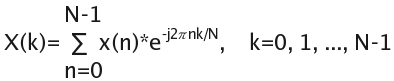

Data Types
Vectors are one of the most often-used data objects in Kst. As their name implies, vectors are simply ordered lists of numbers. Usually they contain the x or y coordinates of a set of data points.
As vectors can potentially be quite large, it is a good idea to be aware of the amount of memory Kst has avaliable for use. The current available memory is displayed in the lower right corner of the status bar of the main Kst window. If the status bar is not available, select -> to display it.
There are two kinds of vector — data vectors and static vectors. Data vectors are read into Kst through a data source. Static vectors, on the other hand, are generated by Kst. They represent an evenly spaced list of numbers, and can be useful, for example, for generating an x-axis for a plot.
The following is a screenshot of the window displayed when editing data vectors. A new data vector is created if you choose the radio button in the New Vector dialog. Explanations of the settings are listed below.
The path to the desired data file. Clicking the button to the right displays a file browser window that can be used to graphically browse for the file.
The field or column to use for the vector.
This section specifies the range of data to use from the selected field for the data vector. This discussion assumes a knowledge of the Frames concept. Using these four settings, the lower and upper boundaries of the data range can be set. For example, to read from frame 10 to frame 900, enter 10 for Start frame and 890 for Range. To read from frame 500 to the end of the file, enter 500 for Start frame and select the Read to end option. To read only the last 450 frames from the file, select the Count from end option and enter 450 for Range. The combinations used in the previous two examples are often useful for reading data from a file that is being updated in real time. Subsequent additions to the file are read, causing associated vectors to be updated as well.
In addition to the lower and upper range boundaries, the samples to read from the selected range can be set.
If Read 1 sample per is not selected, all samples in the selected range will be read.
If Read 1 sample per is selected, only 1 sample per N frames will be read, where N is the number entered in selection box to the right.
The value of the 1 sample that is used to represent a frame depends on whether or not
Boxcar filter first is selected. If Boxcar filter first is not selected, the value is the same as the value of the 1st sample in the frame. If Boxcar filter first is selected, the value is the average of all the samples in that particular frame.
The following is a screenshot of the window displayed when editing static vectors. A new static vector is created if you choose the radio button in the New Vector dialog. Explanations of the settings for static vectors are listed below.
The entries of the vector will be From + (To - From)*(i-1)/(Number of samples - 1) for i = 1,...,Number of samples.
You can also create and initialize vectors by using KstScript. See details in the KstScript of the Extensions Chapter, and in the Vector and DataVector Classes of the Script Chapter.
Examples are provided below:
Example 3.1. Example of Using KstScript to Construct a Static Vector
v = new Vector(); //construct a new vector
v.tagName = "v1"; //give it a name in the Data Manager
v.resize(100); //give it a length of 100
for(var i=0; i<100; i++){v[i]=Math.random()};//intialize this vector
Example 3.2. Example of Using KstScript to Load a Vector from Source Files
source = new DataSource("rand.dat");//specify a data source file system. See the DataSource Class for details
v = new DataVector(s,"1");//construct a new vector v and set its value from field 1 of the source file
v.tagName = "vector" //give the vector a name in the Data Manager
Curves are primarily used to create plottable objects from vectors. Curves are created from two vectors - an “X axis vector” and a “Y axis vector”, that provide a set of data points. Thus, a curve can be thought of as a set of data points and the lines that connect them (even though the points or lines may not be visible on plots).
The following is a screenshot of the window displayed when creating or editing curves. Explanations of the settings are listed below.
The string to be used in Plot Legends to describe this curve.
The vector to use for the independent (horizontal) axis.
The vector to use for the dependent (vertical) axis.
The vectors containing error values corresponding to the X axis vector and Y axis vector, respectively. The vectors should contain the sizes of the error bars in the same order as the data points.
X/Y error bar for
-X/YIf
this item is checked, the error bars are drawn symmetrically about the
data point. To draw asymmetric error bars in the x or y direction,
uncheck the box, and choose a vector for the length of the error bar
below the data point in the -X/Y
error bar combo box.
X/Y error
barThe vector to use for the error bar below the data point. See the previous entry for more detail on using asymmetric error bars.
Determines the color of the data points of the curve. Clicking the button displays the standard KDE color chooser.
Determines whether or not the data points will be indicated by the selected type of marker.
If Show points is enabled, Density allows you to have Kst show only occasional points if they would otherwise clutter the plot.
Determine whether or not the data points will be connected by lines
If Show lines is enabled, this gives the thickness in pixels of the curve.
Draws lines or rectangles from the data points to the y = 0 line in the plot.
If this option is checked, the curve will be ignored in derterming the automatic y-axis range; if it is unchecked the curve will be used in determing the automatic y-axis range. By default, this option is unchecked.
Plotting a curve can be done by using KstScript. See details in the Curve Class of the Script chapter.
Example 3.3. Example of Using KstScript to plot a curve
//xv and yv are names of two existing vectors in the Data Manager. //See example 3.1 and 3.2 for constructing vectors using KstScript. c = new Curve("xv", "yv") // to construct a new curve using xv and yv c.tagName = "xv vs yv"; //define the name for the curve in the data manager //to view the curve, a window object and a plot object need to be constructed. w = new Window(); p = new Plot(w); // using the append method in the CurveCollection Class to show the curve in plot p.cuves.append(c);
There is a detailed example of vectors, plots and curves in the Extensions Chapter. Click here to view it.
An equation data object consists of a mathematical expression and an independent variable. The expression is built using a combination of scalars, vectors, and operators, and usually represents the values of the dependent variable. The independent variable is generated from an existing vector, and stored as a slave vector along with the evaluated results of the equation.
The following is a screenshot of the window displayed when creating or editing equations. Explanations of the settings are listed below.
A list of available operators. Choosing an operator from the list inserts the operator at the current insertion point in the Equation text box.
A list of the current vector objects in Kst. Choosing a vector from the list inserts the vector at the current insertion point in the Equation text box.
A list of the available scalar values. This list is composed of both the scalar values in the current Kst session as well as some built-in constants. Choosing a scalar from the list inserts the scalar at the current insertion point in the Equation text box.
The mathematical expression representing the independent variable. You may manually type in this text box or you may select items to insert using the above drop-down lists. When manually typing equation expressions, remember to put vector and scalar names into square brackets
For a full list of the valid Kst operators, functions and constants to express equations, see the Equation Expression in Kst.
Select a vector to use as the independent vector. Select a vector from the drop-down list, or quickly create a new one by clicking the wizard button to the right.
Select this option to interpolate the selected X vector to the greatest number of samples possible, given the data used in the equation expression. For example, if the data expression acts on a vector Y which contains twice as many variables as the selected X vector, the equation object will create a slave vector of interpolated X values with the same number of points as Y.
The Equation Class in KstScript provides methods to manipulate Equation objects. An example is shown below.
Example 3.4. Example of Using the Equation Class
//construct a vector object
x = new Vector();
x.tagName = "x_vector";//call it x_vector in the Data Manager
x.resize(100);
//initialize x_vector
for(var i=0; i<100; i++){x[i]=i;}
//construct an equation object
eq = new Equation("LN([x_vector])",x);//specify the equation expressions
//check equation appendix to see
//what expressions are supported by Kst.
eq.tagName = "Natural Logrithmic Function";
//to check if the equation is valid
eq.valid
//this should return true
//to constuct a curve using the resulting vectors of applying this equation
c = new Curve(eq.xVector, eq.yVector);
c.tagName = "eq_curve";
//to view the curve, see Example 3.3.
This object calculates the histogram of a chosen vector.
The following is a screenshot of the histogram specific options when creating or editing histograms. Explanations of the settings are listed below.
The data vector to create the histogram from. Although a vector is needed to create a histogram, the vector is treated as an unordered set for the purposes of creating a histogram.
The From field contains the left bound for the leftmost bin in the histogram. The To field contains the right bound for the rightmost bin in the histogram.
Enter the total number of bins to use in this field.
Instead of specifying values for From, To, and Num bins, you can click to automatically generate values for all three fields based on the length and lowest/highest values of the chosen data vector.
Selecting this option causes the y axis to represent the number of elements in each bin.
Selecting this option causes the y axis to represent the fraction of elements (out of the total number of elements) in each bin.
Selecting this option causes the y axis to represent the percentage of elements (out of the total number of elements) in each bin.
Selecting this option causes the y axis to represent the number of elements in each bin divided by the number of elements in the largest bin (the bin with the greatest number of elements).
Histograms can also be constructed using KstScript. See details in the Histogram Class of the Working with KstScript appendix.
Example 3.5. Example of Constructing a Histogram through KstScript
The example below uses the data file normal.dat generated by the perl script in Generating a Histogram of Chapter 2
//load the data vector from normal.dat; see details in example 3.2
s = new DataSource("normal.dat");
v = new DataVector(s, "1");
//construct a histogram object using vector v.
hs = new Histogram(v);
//construnct a histogram curve; see details in the Curve Class
c = new Curve(hs);
//view the histogram; see example 3.3
w = new Window();
p = new Plot(w);
p.curves.append(c);
This data object calculates the Discrete Fourier Transform (DFT) of an input signal using a Fast Fourier Transform (FFT) algorithm, and outputs a spectrum of the signal.
The mathematical definition of the DFT is:

where x(n) is the input signal, and N is the number of samples.
The following definitions assume basic knowledge of power spectra — we use the conventions and terminology of “Numerical Recipes in C: The Art of Scientific Computing”, published by Cambridge University Press.
The data vector to create the spectrum from.
An Apodization Function is a function used to reduce leakage.
In the drop-down menu of Function, the apodization function applied to the spectrum can be chosen from:
If the Apodize option is selected, the data is windowed using the function chosen from the drop-down menu at right. Apodization can be used to reduce bin-to-bin leakage but the resolution of the plot will be decreased. If the Gaussian apodization function is chosen, then a sigma value may also be entered to define its effective width.
Select this option to remove the mean from the data while calculating the transform.
Selecting Interleaved average calculates the FFT over segments of the data, which increases the FFT speed and improves accuracy, at the result of less information about low frequency components. The length of the interleaved segments is specified as a power of 2. If Interleaved average is unchecked, Kst will choose the smallest possible FFT length which is greater than the data vector length.
If the data vector contains NaN values, then selecting this option will cause Kst to interpolate through them when calculating the power spectrum.
This is the number of data vector samples per unit time. The sample rate is used to generate the X axis of the spectrum for plotting.
The units specified in these textboxes are used for the purpose of auto-generating axes labels for the plots.
The output spectrum can be chosen from
Amplitude spectral desnity (V/Hz^1/2)
Power spectral density (V^2/Hz)
Amplitude spectrum (V)
Power spectrum (V^2)
The option selected from this drop-down menu determines which variant of the power spectrum should be computed.
The power spectrum is the plot of |X(k)|^2 vs frequency vector generated by the sample rate. The amplitude spectrum is calculated by taking the square root of the power spectrum. Spectral densitites are calculated by multiplying the Power or Amplitude Spectra by the factor: N/sample rate, where N is the number of data smaples.
The PowerSpectrum Class in KstScript can also be used to construct power spectra.
Example 3.6. Example of Using PowerSpectrum Class
//construct a random vector whose value is between 0 and 1 with 10000 samples
x = new Vector();
x.resize(10000);
x.tagName = "random" //give it a name: random in Data Manager
for(var i=0; i <10000; i++){x[i]=Math.random()}
//construct a Power Spectrum according to the constructor:
//PowerSpectrum(vector, freq, [,average[,len[,apodize[,removeMean]]])
ps = new PowerSpectrum(x, 10, true, 10, true, false)
ps.tagName ="rand_Spec";
After excuting the above scripts, the Data Manager should look like this:
Later, the properties of this power spectrum can be changed like this:
ps.removeMean = true; //choose the remove mean option ps.length = 13; //change the FFT length to be 2^13
A spectrogram is a way to plot the frequency spectrum of a data vector as a function of position within the data. It allows you to visualize, for example, how the frequency distribution of a signal changes with time. In Kst the spectrogram data object takes a data vector as an input and produces an image object which can be displayed as a “waterfall” plot. The waterfall plot is used to show how two-dimensional information changes over time; here, it indicates how power spectrum vs frequency of a data set changes over time. An example is shown in the screenshot below. This is a spectrogram from one day of data from a channel of the WMAP satellite. The size of the intervals over which the component spectra are calculated has been chosen so that each interval corresponds to 1/2 hour of data. The 1h periodic precession of the satellite about its spin axis can be clearly seen. Also, at ~0.007Hz the red lines at the bottom of the image show the much faster (0.5rpm) spin frequency of the satellite.
Here is the edit dialog for the spectrogram object.
An explanation of the spectrogram specific options is given below:
The length of the data over which to take the spectra. The data vector will be subdivided into intervals of this length, and a spectrum will be computed for each one.
These are the options for the individual spectra. See the Spectrum data object for more information. The output quantities are indicated by color scalar.
This option should be accessed from the Edit Image dialog of the image created from the spectrogram.
Here you can choose the color scheme to use for the spectrogram. The amplitudes of the spectra are color-coded according to the selected scheme.
The spectrogram can also be generated by using the Spectrogram class in KstScript
Example 3.7. Example of Using the Spectrogram Class
The vector: “random” generated in Example 3.6 will continue to be used in this example
s = new Spectrogram("random", 10)//generate a spectrogram using vector “random”
//and specify the frequency to be 10 Hz
s.windowsize = 500; // specify the window size to be 500
s.tagName = "rand_Spectrogram";
Now, you can check that “rand_Spectrogram” is in the Data Manager. You can view the waterfall plot by making an image from the slave matrix
A plugin data object represents a Kst plugin. All plugins have a common format, and show up as type “Plugin” in the Data Manager. For more information about the available plugins and their options, please see the Plugins chapter.
An event monitor data object essentially keeps track of one or more vectors or scalars, and performs an action when a specified condition involving the vectors and scalars is true. Event monitors are usually used in conjunction with “live”, or streaming data. For example, an event monitor could be created to monitor whether or not elements of a data vector representing temperature exceed a predefined value.
You can create a new event monitor from the ->, or by using the Data Manager.
The following is a screenshot of the window displayed when creating or editing events. Explanations of the settings are given below.
The expression to monitor. You may type directly in this textbox, or select items to insert using the operator, vector, and scalar drop-down lists. Ensure that the expression entered in this textbox is a boolean expression (i.e. it evaluates to either true or false). This usually entails using an equality or inequality in the expression. Note that vectors entered in the textbox will be monitored according to their individual elements.
Whenever this expression is true (evaluates to non-zero), the event will be triggered. The action taken upon an event trigger depends on the settings specified in the other settings.
This textbox is used to store a short description of the event. The description is primarily available as a method for keeping track of multiple events. You can enter any text you wish in this textbox.
Enable this checkbox to have entries added to the Kst debug log when this event is triggered. There are three types of entries in the debug log — notices, warnings, and errors. Select the desired type of entry using the corresponding radio button.
Enable this checkbox to have Kst send e-mail notifications to the specified address when this event is triggered. General E-mail configuration options are available in the Kst Settings dialog.
If the ELOG Extension is activated, then then Event Monitor can provide notification through ELOG. This can be useful for remotely monitoring live data, or for obtaining summaries of event activity. Please see the ELOG section for more information.
If this option is activated, then the Event Monitor can execute a KstScript when it triggers. Please see the KstScript documentation for more information.
A matrix represents a set of three-dimensional data points (x, y, z) arranged in a two-dimensional grid.
Just as is the case with the vector datatype, there are two kinds of matrix: data and static. Data matrices are read in from data sources, and static matrices are generated by Kst.
The following is a screenshot of the window displayed when editing a data matrix. A new data matrix is created if you choose the radio button in the New Matrix dialog.
All of the options which are available for data matrices are analogous to the options for Data Vectors.
Any field in ascii file that is going to be used as data source for matrix must have its field name in this format: [MATRIX, # of rows, x min, y min, x step size, y step size]. A very simple example of a matrix source file is provided below.
This option allows you to use only a portion of the matrix by specifing the range of data in both the x and y directions.
X starting frame: the starting index in x dimension of the matrix
Y starting frame: the starting index in y dimension of the matrix
X number of frames: the number of data points in x dimension
Y number of frames: the number of data points in y dimension
[MATRIX,5,0,0,1,1] 0.47 0.12 0.49 0.97 0.67 0.46 0.64 0.9 0.53 0.13
The resulting matrix would be a 2×5 matrix, and the 10 samples are all included:
Notice that only the number of rows needs to be specifed since Kst can figure out the number of columns automatically in order to have the loaded matrix use the largest number of samples in the original data field.
If the field name of the matrix is [MATRIX,6,0,0,1,1], the resulting matrix would have dimension 1×6; only 6 samples would be included.
For the 2×5 matrix in the Screenshot above, if only part of the matrix:from index(1,2) to index(2,4), is needed; that is
0.12 0.64
0.49 0.9
0.97 0.53
The Data Range needs to be specified in the following way:
X starting frame: 0
Y starting frame: 1
X number of frames: 2
Y number of frames: 3
The result is this:
The following is a screenshot of the window displayed when editing static matrices. Static matrices allow you to create gradient matrices such as the one shown in the background of the annotation object example. A new static matrix is created if you choose the radio button in the New Matrix dialog.
These options allow you to construct a matrix which has a linear gradient in Z along either the X or Y axis.
The steps options allow you to set the size of the matrix.
X steps indicates column numbers
Y steps indicates row numbers
The X/Y minimum and X/Y step size options allow you to set the X and Y ranges.
Matrices can also be constructed by KstScript. See details in the Matrix class and the DataMatrix Class of the Script Chapter.
Example 3.8. Example of Using the DataMatrix Class in KstScript
s = new DataSource("home/vyiwen/mx.dat")//mx.dat is the same matrix source file in the example source file above
m = new DataMatrix(s, "[MATRIX,5,0,0,1,1]")//use mx.dat to construct a matrix
m.tagName = "Simple_matrix";//Name the matrix “Simple_matrix” and you should be able to see it in the Data Manager.
//if you want to specify a portion of matrix by specifying the data range in the x, y dimension,
//use the method: change(xStart, yStart, xFrames, yFrames)
m.change(0,1,2,3)//you can see the change in “Simple_matrix”
// it should be the same 2 by 3 matrix
// as in the example of specifying a portion of matrix above.
Example 3.9. Example of Using the Matrix Class to construct a Static Matrix
y = new Matrix(); // to construct a new matrix
y.resize(3,5); //define the size of the matrix 3 by 5 matrix
//i.e 3 rows and 5 columns
for(var i=0; i<5;i++){for(var j=0; j<3;j++){y.setValue(i,j,i+j)}}; //to initialize the matrix
y.tagName="mx"; //you should see matrix “mx” in the Data Manager now
Images are graphical representations of Matrices. Images can be plotted as color maps, contour maps, or both.
Select the matrix to use for this image. New matrices can be created or edited by clicking buttons to the right.
Select the type of image to be plotted. Changing this selection enables or disables sections of the image dialog as appropriate. A color map represents the Z value of each cell in the matrix using a color. A contour map plots curves which follow lines of constant Z.
Select the color palette to use for the color map.
Enter the lower and upper thresholds to use for the mapping of colors. Palette colors are evenly distributed between the lower and upper thresholds. Any cells in the selected matrix with z values less than the lower threshold are mapped to the first color in the palette. Any cells in the selected matrix with z values greater than the upper threshold are mapped to the last color in the palette.
Clicking this button causes the lower and upper threshold values to be set to the current minimum and maximum z values of the selected matrix.
Clicking the button causes the lower and upper threshold values to be set such that the percentage of z values in the selected matrix contained between them is equal to the value in the Percentile numberbox.
Selecting this option causes the lower and upper threshold values to be always set to the minimum and maximum of the z values for the selected matrix, even when the matrix updates.
Select the number of contour levels to use. The contour levels will be distributed evenly between the lowest and highest z values found in the matrix.
Select the color to use for the contour lines. Clicking this button displays a standard KDE color chooser dialog.
Select the Weight, or “thickness” of the contour lines. If Use variable line weight is selected, contour lines representing higher elevations are drawn thicker than those representing lower elevations. Use discretion when selecting this option, as images with high contour line densities may become unreadable.
See the Image Class of the Script Chapter for detail.
Vector view provides a way to view a portion of the data plot. It excludes any data point which is not in the range of the X/Y limits specified by the user.
Select an input X/Y axis vector from existing vectors or create one by using the shortcut icons.
Adjust the view range of the plot by selecting X min/Y min and X max/Y max values for the input vectors.
This option is used to exclude specific points in the input vector for the vector view. The indices of non-zero points in the flag vector indicate that the data points of the input vector with the same indices should be filtered out for its vector view.


Would you like to make a comment or contribute an update to this page?
Send feedback to the KDE Docs Team